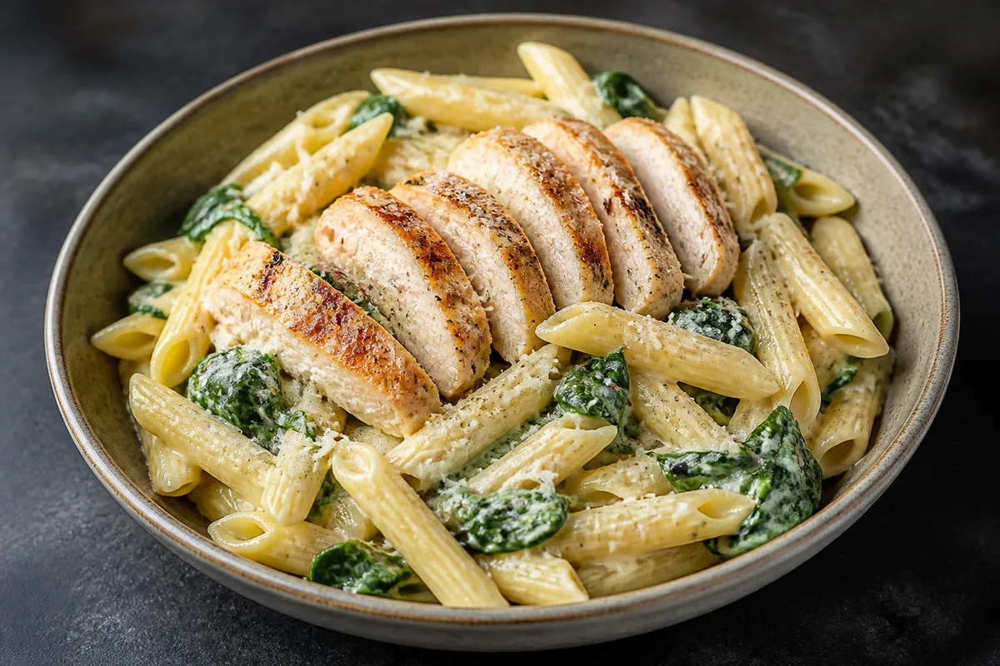

Your first week · household edition
A little less waste.
A lot less keeping track.
Stocked is a helpful picture of your kitchen. It doesn’t need to be a perfect count of everything you eat.

The only family rule
Finish the last of something? Let the person managing Stocked know—or mark it All gone on the kitchen device. Need it again? Add it to Shop.
No logging every snack. No measuring the milk. If you forget, we’ll catch it at the next kitchen check.
Start small tomorrow.
This release saves on this device. Family cloud accounts are not switched on yet. Use one phone or kitchen tablet as the household’s main copy for now. Opening Stocked on another phone will not show the same inventory. Profile names on this device are not private accounts.
Pick one kitchen device and one helper.
Keep Stocked in the same browser, or the same installed home-screen app. One person handles grocery receipts and the weekly check; the rest of the family only needs to mention what’s run out.
Start with one fridge shelf.
Add 10–15 foods you often forget or buy twice. Use the + button, then type them in or scan a barcode. Leave spices and every half-used bottle for later.
Choose dinner from what’s there.
Today shows foods to check and meal ideas. Cook compares recipe ingredients with your kitchen; add missing ingredients to Shop. Check amounts yourself—having an ingredient does not guarantee enough for the recipe.
One grocery trip. Three small steps.
Scan, then review.
Tap Receipt on Today or choose it from +. Check the names and counts, and untick non-food or anything already entered on this trip. Stocked flags matching food already at home; a new purchase stays separate so old and new dates don’t get mixed.
Receipt and shelf-photo reading require internet and your own AI provider key in Settings. The image is sent to that provider. No key? Use barcode scanning or manual entry; a missed scan never needs to stop you.
Put it away once.
Save the review to Inventory. Stocked remembers each food in Inventory → Your catalog, along with its shelf. Check printed package dates where they matter: receipt-based dates are usually estimates, not a safety guarantee.
Buy familiar things without retyping.
Open Your catalog, search, and tap a food. Choose Just add it to the shopping list before buying, or Put it back in the pantry after buying. A catalog entry means “we’ve had this,” not “we still have this.”
Use one restocking route per purchase: receipt, catalog, or Shop’s “Add to pantry.” Doing all three would add the same groceries three times.
Keeping it current without the chore.
During the week: only the last one matters.
Open a food in Inventory and choose All gone when you finish it. For something thrown away, use Threw it out. If you use Stocked’s cooking flow, review the ingredients before recording consumption so you don’t count them twice.
Before shopping: a quick shelf check.
Open Quick kitchen check on Today or Inventory. Choose a place, mark Still here or Gone, then Save check. You can untap a choice before saving. Skipped foods stay unchanged, and Undo is available after saving. Gone items stay in your catalog for buying again.
“Gone” removes the whole entry, not one unit. It deliberately doesn’t guess whether food was eaten or wasted. Nothing disappears just because a date passed.
If nobody wants to touch the app.
Keep a small “we’re out of…” note on the fridge, or let family members tell the helper. Enter those few items together before shopping. The app should save the household effort, not distribute homework.
Send this to your family.
We’re trying Stocked so we stop buying doubles and forgetting food. You don’t have to log meals or snacks. If you finish the last of something, just tell me or put it on our fridge note. I’ll handle receipts and a quick check before shopping. We’re starting with one shelf—not the whole house.
A few things worth knowing.
Will updates erase our food?
App updates are designed to keep your saved kitchen data. But device-only storage can still be lost if you clear browser data, lose the device, or use private browsing. Make a JSON backup in Settings before major changes and weekly while using one device. Store it somewhere you control. A downloaded copy is not live family sync.
How do I install it on my phone?
On iPhone, open the live Stocked site in Safari, use Share, then Add to Home Screen. On Android, open it in Chrome and look for Install app or Add to Home screen. Open that same installed copy each time. Before entering real groceries, add one test item, close the app, and reopen it to check that it stays.
What works without internet?
After Stocked has loaded online, saved inventory, the catalog, your list and bundled recipes work offline on this device. New barcode lookups, receipt reading and online recipe imports need a connection.
When can everyone use their own phone?
Private accounts and shared-kitchen sync have been built and tested, but family rollout is still gated on a verified email sender, real sign-up/reset emails, phone sign-in checks and a backup/restore drill. Until that is finished, don’t expect cross-device sharing or private family profiles.